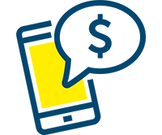

A Upfour é uma empresa de crédito pessoal fundada em 1961. Opera com recursos próprios, contando com mais de 1200 pontos de atendimento e 1 milhão de clientes. Foi das pioneiras no segmento de crédito pessoal se destacando nas décadas de 60 e 70 com seu processo de expansão para todo território nacional

Emprétimo para negativado, aqui investimos nos sonhos de nossos clientes
